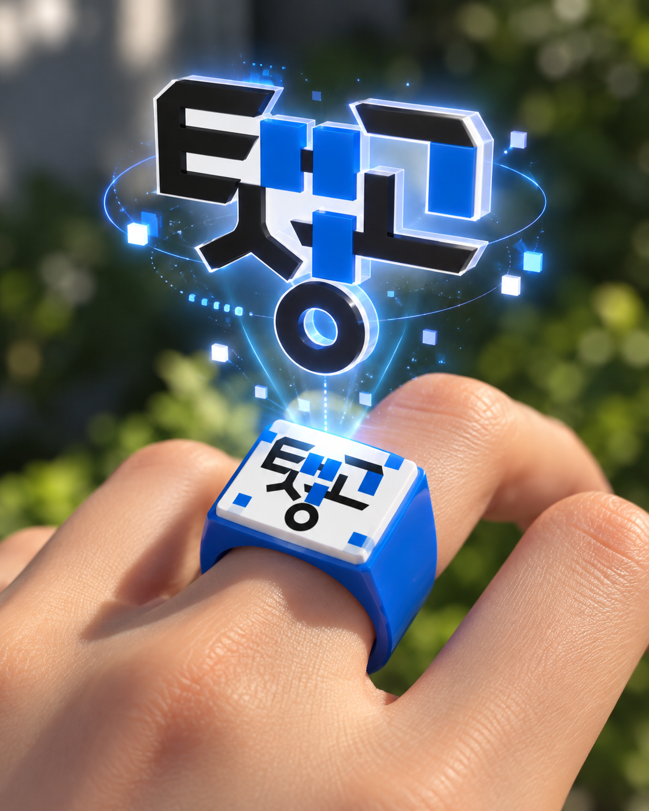

내 손 위로 떠오르는
태성
반지의 ‘태성’ 마커를 스마트폰 카메라로 비추면 원본 로고가 입체적인 3D 오브젝트로 나타납니다. 태삼씨 캐릭터는 다음 버전에서 추가됩니다.
PROTOTYPE v0.1 · 마커 기반 WebAR
📷 카메라 AR 시작하기 →
앱 설치 없이 스마트폰 브라우저에서 실행합니다. HTTPS 주소와 카메라 권한, 인터넷 연결이 필요합니다.
원본 태성 로고 사용실시간 마커 추적3D 돌출 효과

이렇게 체험하세요
1마커를 준비합니다. 아래 이미지를 출력해 책상에 두거나, 링의 정사각형 상판에 같은 도안을 부착합니다.
2다른 기기에서 AR 페이지를 엽니다. 이 웹앱을 HTTPS 사이트에 올리고 휴대폰에서 접속합니다.
3카메라 권한을 허용합니다. 검은 테두리와 흰 여백이 모두 보이도록 비춥니다.
4태성 로고를 감상합니다. 스마트폰 화면 속 3D 로고가 반지 위에 정렬됩니다.
먼저 80mm 테스트 카드로 AR 기능을 확인한 뒤 작은 반지로 단계적으로 축소하여 시험하세요.

검정 테두리를 자르지 마세요. 원본과 다른 마커는 인식하지 않습니다.